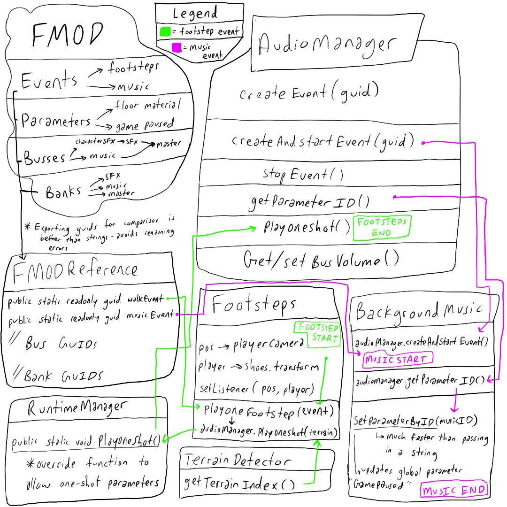

Full data flow diagram
Fmod Unity Integration basics
The first step here was to understand how the FMOD Unity integration needs to be set up. Firstly, the main camera always needs to have a Studio Listner object attached for 3D positioned sounds to pan correctly. Next, we need to decide which banks need to be loaded using a Studio Bank Loader component. I like to tick 'Preload Sample Data' in order to reduce latency, at the cost of consuming a small amount of memory upfront. Now we are ready to connect our events. At this point, it is important to note that the FMOD Unity integration works by using string references. This is true for all API functions that reference events, parameters, busses, and banks. The problem with that, is that string comparisons are extremely slow and unreliable. What happens if we change the name in FMOD? We need to track down a missing reference, and even worse, that name may be sprawled all over our codebase. Instead, there is an option in FMOD to export a C# file with GUIDs. The GUID won't change even if the name does. On the top row of options, go to Scripts/FMOD Examples/Export GUIDS Header/C# File. GUIDs is how FMOD references everything on the backend and using them directly will speed things up a bit.
FMODReferences.cs
using System;
namespace FSPRO
{
public class Event
{
public static readonly Guid Events_Music_Music = new Guid(0x3d2ed972, 0x4e06, 0x43e9, 0xad, 0x29, 0x01, 0x22, 0xda, 0x3a, 0x72, 0x0e);
public static readonly Guid Events_SFX_Character_EmoteJump = new Guid(0x270aae82, 0x32a8, 0x45d6, 0xa7, 0xcb, 0xdf, 0x90, 0x6f, 0xd4, 0x46, 0x2a);
public static readonly Guid Events_SFX_Character_EmoteLand = new Guid(0x7e4bb059, 0xd1d1, 0x4170, 0xb5, 0x15, 0x88, 0xc8, 0x94, 0x04, 0x7d, 0x1f);
public static readonly Guid Events_SFX_Character_EmoteSwing = new Guid(0x1af2c91d, 0x1453, 0x4196, 0x9c, 0x12, 0x32, 0xbf, 0x4f, 0x01, 0x98, 0x09);
public static readonly Guid Events_SFX_Character_Footsteps = new Guid(0xe6f36b30, 0xcc34, 0x4bcd, 0xab, 0x15, 0x7e, 0xca, 0x9a, 0xb2, 0xe9, 0xc0);
public static readonly Guid Events_SFX_Character_Jump = new Guid(0x543d1350, 0xf8b2, 0x44d4, 0xa1, 0x18, 0xcb, 0xee, 0xc9, 0xe5, 0x4c, 0xdb);
// ... more events
}
public class Bus
{
// Bus GUIDs
}
public class Bank
{
// Bank GUIDs
}
}
AudioManager
After setting up a basic FMOD project with a couple events and parameters, I assigned them to mixer busses and built them to bank files located in the Unity project Assets folder. I then created an empty Unity object called AudioManager and started organizing this system. Firstly, I split events into three general categories: Music, Sound Effects (SFX), and Ambience. This allowed me to compartmentalize the system based on the type of audio and context of when it should be playing. Music is always a 2D, singular object, and parameters such as health or experience could affect the composition. Sound effects are generally positional one-shot sounds trigger by a collision or particular interaction, and many can overlap at once. Ambience is always positional, as it establishes a sense of space in the environment. Here is what my audio manager script looks like: AudioManager.cs
public class AudioManager {
public EventInstance EventInstance;
public EventInstance CreateEvent(Guid eventGuid)
{
EventInstance eInst = RuntimeManager.CreateInstance(eventGuid);
return eInst;
}
public void CreateAndStartEvent(Guid eventGuid)
{
EventInstance = RuntimeManager.CreateInstance(eventGuid);
EventInstance.start();
EventInstance.release();
}
public void StopEvent(STOP_MODE stopMode)
{
EventInstance.stop(stopMode);
}
public bool isVoiceVirtual()
{
EventInstance.isVirtual(out bool virt);
return virt;
}
public PARAMETER_ID GetParameterID(string parameterName)
{
PARAMETER_ID parameterID;
EventDescription eventDesc;
EventInstance.getDescription(out eventDesc);
PARAMETER_DESCRIPTION parameterDescription;
eventDesc.getParameterDescriptionByName(parameterName, out parameterDescription);
parameterID = parameterDescription.id;
return parameterID;
}
public void PlayOneShotAttached(Guid eventGuid, GameObject obj, string parameterName, float value)
{
RuntimeManager.PlayOneShotAttached(eventGuid, obj, parameterName, value);
}
public static void SetBusVolume(string busPath, float volume)
{
Bus busName = RuntimeManager.GetBus(busPath);
busName.setVolume(volume);
}
public static float GetBusVolume(string busPath)
{
float vol = 0f;
Bus busName = RuntimeManager.GetBus(busPath);
busName.getVolume(out vol);
return vol;
}
}
FMOD Optimizations
Lets break down a little bit of what's going on here. Now I am able to play sound from anywhere in the project without duplicating code. This also allow non audio programmers to use the code without needing to understand the backend. They just need to include an AudioManager object in their class and they have access to my helper functions, without needing to understand the FMOD source. Another interesting fact, is that we have the ability to reference parameters by name(string), which is very slow and error prone, or by ID which is only a single integer comparison.FMOD PlayOneShot Function Override
SFX, for the most part, were attached to Character objects and needed to be 3D. The footsteps audio, for instance, needed to be attached to the Character shoes (this is a third-person game), so the sound is coming from under the camera. The function we want to call in this case is RuntimeManager.PlayOneShotAttached which fires off a single instance sound and allows you to pass in a GameObject. The native function does not allow you to pass in a parameter for the event. Since I wanted to update the footsteps using the floor material as a parameter, I needed to find a way to do this. Luckily, we have access to the FMOD source code and can easily override the PlayOneShotAttached to include this.RuntimeManager.cs
public static void PlayOneShotAttached(Guid guid, GameObject gameObject, string parameterName, float parameterValue)
{
var instance = CreateInstance(guid);
AttachInstanceToGameObject(instance, GameObject.transform, gameObject.GetComponent<Rigidbody>());
instance.SetParameterByName(parameterName, parameterValue);
instance.start();
instance.release();
}
TerrainDetector.cs
public class TerrainDetector : MonoBehaviour {
private TerrainData _terrainData;
private int _alphamapWidth;
private int _alphamapHeight;
private float[,,] _splatMapData;
private int _numTextures;
public TerrainDetector()
{
_terrainData = Terrain.activeTerrain.terrainData;
_alphamapWidth = _terrainData.alphamapWidth;
_alphamapHeight = _terrainData.alphamapHeight;
_splatMapData = _terrainData.GetAlphamaps(0, 0, _alphamapWidth, _alphamapHeight);
_numTextures = _splatMapData.Length / (_alphamapWidth * _alphamapHeight);
}
private Vector3 ConvertToSplatMapCoordinate(Vector3 worldPosition)
{
Vector3 splatPosition = new Vector3();
Terrain terrain = Terrain.activeTerrain;
Vector3 terrainPosition = terrain.transform.position;
splatPosition.x = ((worldPosition.x - terrainPosition.x) / terrain.terrainData.size.x) * terrain.terrainData.alphamapWidth;
splatPosition.z = ((worldPosition.z - terrainPosition.z) / terrain.terrainData.size.z) * terrain.terrainData.alphamapHeight;
return splatPosition;
}
public int GetActiveTerrainTextureIndex(Vector3 position)
{
int activeTerrainIndex = 0;
float largestOpacity = 0f;
Vector3 terrainCoord = ConvertToSplatMapCoordinate(position);
for ( int i = 0; i < _numTextures; ++i ) {
if ( largestOpacity < _splatMapData[(int)terrainCoord.z, (int)terrainCoord.x, i] ) {
activeTerrainIndex = i;
largestOpacity = _splatMapData[(int)terrainCoord.z, (int)terrainCoord.x, i];
}
}
return activeTerrainIndex;
}
}
Then, I attached the PlayOneFootstep() function below to the animation event where the character's foot hits the ground for walking, running, etc.
Footsteps.cs
public class Footsteps : MonoBehaviour {
[SerializeField] private GameObject shoes;
[SerializeField] private GameObject mainCamera;
[SerializeField] private int listener = 0;
private TerrainDetector terrainDetector;
private AudioManager _audioManager;
FMOD.ATTRIBUTES_3D positionSettings = new FMOD.ATTRIBUTES_3D();
FMOD.VECTOR playerPosition;
private void Awake()
{
terrainDetector = new TerrainDetector();
_audioManager = new AudioManager();
}
private void Update()
{
positionSettings.position = RuntimeUtils.ToFMODVector(mainCamera.transform.position);
playerPosition = RuntimeUtils.ToFMODVector(shoes.transform.position);
RuntimeManager.StudioSystem.setListenerAttributes(listener, positionSettings, playerPosition);
}
public void PlayOneFootstep()
{
int terrainTextureIndex = terrainDetector.GetActiveTerrainTextureIndex(transform.position);
_audioManager.PlayOneShotAttached(FmodEventGuids.Events_SFX_Character_Footsteps, gameObject,
FmodParameters.Parameter_Character_FloorMaterial, terrainTextureIndex);
}
}
BackgroundMusic.cs
public class BackgroundMusic : MonoBehaviour {
private AudioManager _audioManager = new AudioManager();
private EventInstance _backgroundMusicEvent;
private PARAMETER_ID _musicParameterID;
private void Start()
{
_audioManager.CreateAndStartEvent(FmodEventGuids.Events_Music_ExploreIsland);
}
private void Update()
{
_musicParameterID = _audioManager.GetParameterID(FmodParameters.GlobalParameter_Music_GamePaused);
RuntimeManager.StudioSystem.setParameterByID(_musicParameterID, Convert.ToInt32(GameManager.Instance.GameIsPaused));
}
private void OnDestroy()
{
_audioManager.StopEvent(STOP_MODE.ALLOWFADEOUT);
}
}